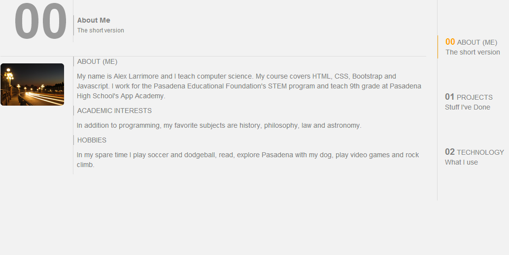

-

Portfolio 1.0
Created a simple multi-page online portfolio which documents past projects and technologies used. Built with: HTML and CSS
-

Portfolio 2.0
Built a responsive multi-page online portfolio which documents past projects and technologies used.Built with: HTML, CSS, and Bootstrap.
01
Projects
Stuff I've done